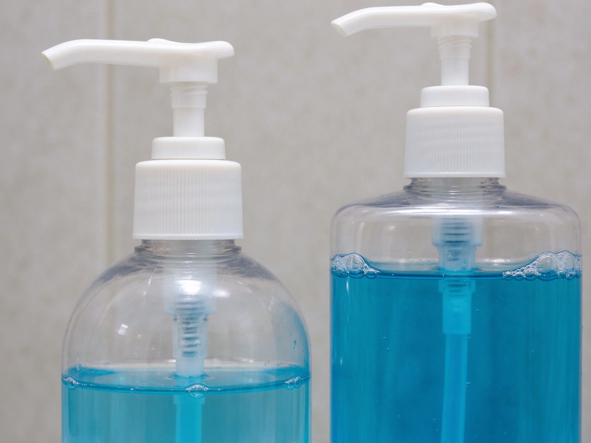

美甲消毒用品是什麼？入門入門攻略
消毒分三級：拋棄式、金屬工具高溫滅菌、檯面酒精擦，少一關就別接客。
消毒用品原理與辨識重點：美甲師不說的酒精消毒檯面
美甲工具會碰皮膚和指緣，剪甘皮甚至可能見血，不消毒會交叉感染細菌、黴菌。消毒要分層：拋棄式用完即丟；金屬工具（剪刀、推棒）要高溫高壓滅菌；工作檯面和手用酒精擦拭；紫外線箱做表面殺菌。
誰適合做消毒用品？衛生基礎對號入座
所有接客人的美甲師、沙龍都要做；在家自己做雖然要求低，但基本消毒觀念要有。
消毒用品美甲施作步驟：酒精＋消毒液＋UV箱
每位客人離開 → 金屬工具先清洗去殘膠 → 放進高溫滅菌鍋 15 分鐘 → 取出放 UV 箱備用 → 工作檯噴 75% 酒精擦拭 → 自己洗手。
消毒用品優缺點分析：美甲持久度與傷甲評估
| 優點 | 說明 |
|---|---|
| 做好消毒保護客人也保護自己，是沙龍基本良心。 | 是通用流派的招牌，入門就能上手 |
| 缺點 | 說明 |
| 消毒流程費時間，耗材成本高，便宜店常常省略這步。 | 前置與別只噴酒精就把工具給下一位客人用。酒精殺孢子和很多黴菌效果有限，金屬工具一定要高溫滅菌。UV 箱也只是表面輔助，不能取代高溫。沒顧好會打折 |

消毒用品新手雷區：工具泡消毒液與常見錯誤
注意：別只噴酒精就把工具給下一位客人用。酒精殺孢子和很多黴菌效果有限，金屬工具一定要高溫滅菌。UV 箱也只是表面輔助，不能取代高溫。
消毒用品和其他美甲做法的差別比較
「消毒」和「滅菌」程度不同：消毒殺大部份細菌，滅菌殺所有微生物含孢子。美甲業界標準是金屬工具要到「滅菌」等級，不是只有消毒。
消毒用品美甲常見問題 FAQ
Q：UV 消毒箱夠用嗎？ A：當作輔助可以，但 UV 殺菌強度有限、死角照不到。正確流程是先高溫滅菌、再放 UV 箱備用。
Q：酒精用 75% 還是 95%？ A：75% 殺菌效果最好。95% 太快蒸發、細菌外層馬上凝固反而殺不透。買 75% 就好。
Q：銼刀可以消毒再用嗎？ A：拋棄式銼刀建議用完即丟，重複使用的（金屬銼）要先刷洗再高溫滅菌。海綿磨棒一律拋棄。